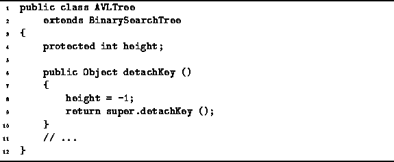

Data Structures and Algorithms
with Object-Oriented Design Patterns in Java
Data Structures and Algorithms
with Object-Oriented Design Patterns in Java
The method for removing items from an AVL tree
is inherited from the BinarySearchTree class
in the same way as AVL insertion.
(See Program  ).
All the differences are encapsulated in the detachKey and
balance methods.
The balance method is discussed above.
The detachKey method is defined in Program
).
All the differences are encapsulated in the detachKey and
balance methods.
The balance method is discussed above.
The detachKey method is defined in Program

Program: AVLTree class detachKey method.
 Copyright © 1998 by Bruno R. Preiss, P.Eng. All rights reserved.
Copyright © 1998 by Bruno R. Preiss, P.Eng. All rights reserved.